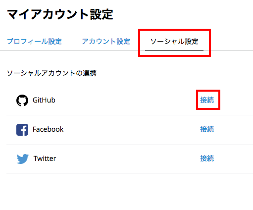
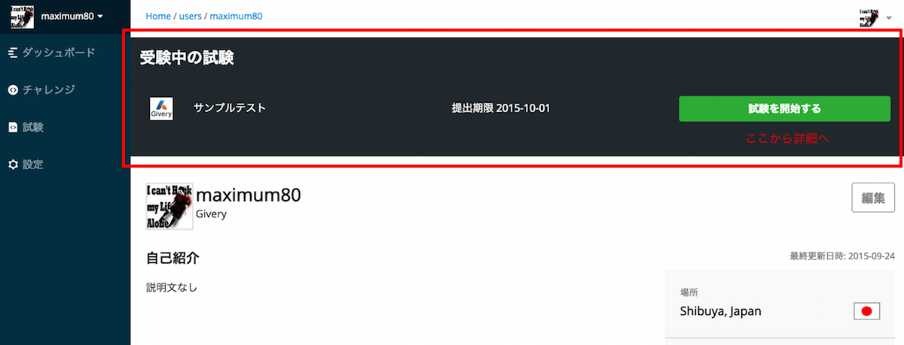
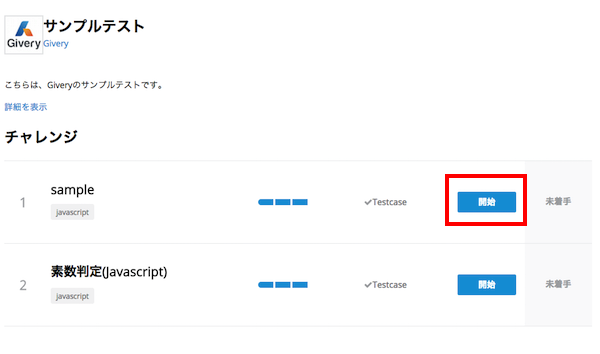
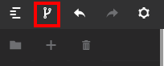

1. はじめに
codecheckとは、GitHubのリポジトリ単位でプロジェクトの問題を作成、管理をすることが出来るプログラミング試験管理サービスです。 アルゴリズムテストだけでなく、まるでWebサービスやスマートフォンアプリを開発していくかのような問題を作成、回答することができます。
2.会員・プロフィール登録
codecheckで試験を受験するにはまずは会員登録が必要です。 コチラより、会員登録を完了しましょう。 また、企業様から試験が発行されている場合は、送信先のメールアドレスで既に仮会員登録が完了しています。 メールアドレス確認用のメールが届きますので、会員登録を完了させてください。
2-1. 会員登録
会員登録は以下の2つの方法で行うことが可能です。
メールアドレスで登録
ご利用しているご自身のメールアドレスで会員登録が可能です。登録は以下のフローより行うことが可能です。
- 利用しているメールアドレスの入力と確認メールの送信
- メールアドレス認証メールの承認（メール内のURLをクリック）
- 利用するユーザ名（本名ではなくて可）、ログインに必要なパスワードを入力して登録を完了させてください。
ソーシャルアカウントで登録
GitHub、Twitter、Facebookのアカウントを利用してご登録いただくことも可能です。GitHubアカウントの認証をすると、GitHubを活用した問題の回答をすることが可能です。
2-2. プロフィールの登録
プロフィールの登録
会員登録、ログインが完了したら、コチラからプロフィールを記入しましょう。 試験によっては 氏名（フルネーム） 生年月日 が必須のこともありますので、忘れずに入力しておきましょう。
言語設定の変更
言語設定の変更は設定内のアカウントセッティングから行うことが出来ます。
ソーシャルアカウント（GitHubアカウント）の追加
codecheckは、GitHubを活用してチャレンジを回答することが出来ます。
しかし、その場合は、お持ちのGitHubアカウントを連携する必要があります。
設定->ソーシャル設定
に移動して以下の接続というリンクをクリックしてください。

GitHubにアクセスしてアプリの連携承認後、codecheck内に戻ってアカウント名が表示されていれば成功です。
プルダウンを日本語に切り替えて「セット」ボタンをクリックすると設定が反映されます。

3. 試験(Exam)の受験
3-1. 受験開始
受験の招待の確認
招待メールを確認してください。 招待メールに記載されているURLからアクセスして、試験の詳細を確認してください。 また、試験が配信されている場合、ログイン後、ページ上部に試験の内容が表示されています。「試験を開始する」ボタンをクリックして詳細をご覧ください。 
3-2. 詳細の確認
制限時間
制限時間が設定されている試験とされていない試験があります。 制限時間は試験を「開始」してから提出までの時間の事を指します。
提出期限
すべての試験には提出期限があります。 提出期限は問題を提出しなければならない締切の事を指します。
受験の開始
詳細画面右下の「開始」ボタンをクリックするとモーダルが表示されます。（ここではまだ試験開始にはなりません） 表示されたモーダルから「開始」をクリックすると試験が開始されます。 一度試験を開始すると、制限時間のカウントダウンが開始されますので、十分ご注意ください。
3-3. 試験の受験
問題回答の開始
試験を開始すると、回答する必要のある問題（チャレンジ）のリストが表示されます。
チャレンジの回答を開始するには、以下のキャプチャの「開始」ボタンを選択する必要があります。

開始ボタンをクリックすると、チャレンジの起動がはじまり、準備が完了すると問題を開くことが出来ます。
Web Editor(ブラウザエディタ)での受験
問題の「開く」ボタンをクリックすると、Web Editor（ブラウザエディタ）が立ち上がります。
Web Editorの詳細の操作はWeb Editorの使い方を参考にしてください。
GitHubを利用した受験
問題によって、GitHubへのリポジトリのフォークを許可している問題もあります。
Web Editor内の以下のボタンが表示されている場合、GitHubを使って自身の環境で問題を回答することも可能です。
GitHubアカウントをお持ちのユーザーは、フォークボタンをクリックしてGitHub上にリポジトリを生成して、自身の環境にチャレンジをcloneして受験をすることが出来ます。

詳細はGitHubを利用した受験方法を参考にしてください。
3-4. 回答の提出
回答内容の確認
回答した内容を提出します。提出する回答は、回答内容を一度は「Save（保存）」をしたもののみになります。

上記のように、ステータスが「保存」となっているかどうかを確認してください。
「作業中」ものは編集中ですが保存はされていません。制限時間が懲戒した際等、回答内容は提出されませんので、必ず「保存」をするようにしてください。
回答の提出
回答の提出は、試験中の画面右上の「提出」ボタンをクリックすることでおこなわれます。 改めて、回答したチャレンジが「保存」となっているかどうか提出前に確かめておきましょう。
制限時間超過の場合
制限時間が超過した場合は、自動的に「保存」されている問題が回答として提出されます。 必ず制限時間内に「保存」した回答内容を「提出」するように心がけましょう。